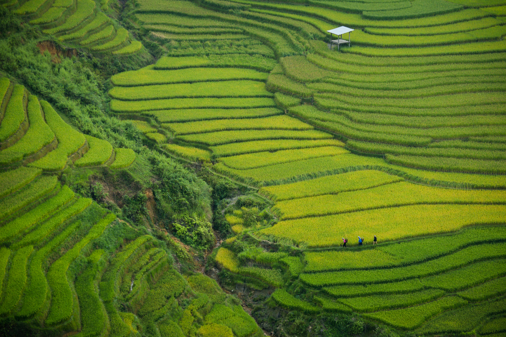
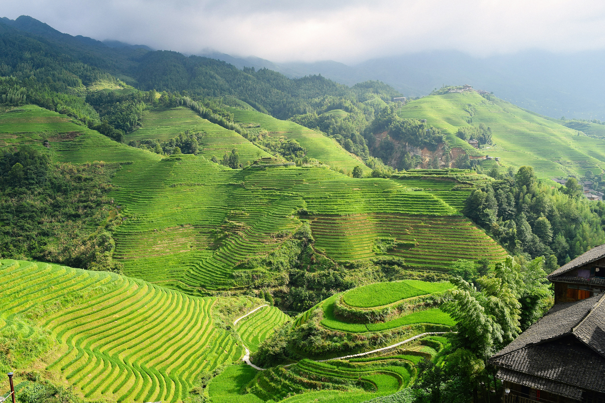

Banaue Rice Terraces

Banaue Mountain View

The Banaue Rice Terraces are beautiful green steps on the mountains. They show the hard work and culture of the Filipino people. It is a great place to enjoy nature and amazing views.